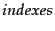
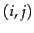
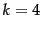
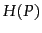
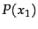
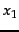
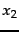
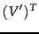
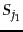
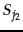

Next: Table of Notations
Up: irbook
Previous: List of Tables
Contents
Index
- Results from Shakespeare for the query
Brutus AND Caesar AND NOT
Calpurnia.
- Intersecting the postings lists for Brutus and
Calpurnia from Figure 1.3 .
- Algorithm for the intersection of two postings lists
 and .
and .
- Algorithm for conjunctive queries that returns the set of documents containing each term in the input list of terms.
- A stop list of 25
semantically non-selective words which are common in Reuters-RCV1.
- An example of how asymmetric expansion of query terms can
usefully model users' expectations.
- A comparison of three stemming algorithms on a sample text.
- Postings lists intersection with skip pointers.
- A portion of a permuterm index.
- Dynamic programming algorithm for computing the edit distance between strings and .
- Matching at least two of the three 2-grams in the query bord.
- Document from the Reuters newswire.
- Inversion of a block in
single-pass in-memory indexing
- An example of distributed indexing with MapReduce.
Adapted from Dean and Ghemawat (2004).
- Logarithmic merging. Each token
(termID,docID) is
initially added to in-memory index by LMERGEADDTOKEN.
LOGARITHMICMERGE initializes and .
- A user-document matrix for
access control lists. Element 
is 1 if user
 has access to document
has access to document  and 0
otherwise. During query processing, a user's access postings list is intersected with
the results list returned by the text part of the index.
and 0
otherwise. During query processing, a user's access postings list is intersected with
the results list returned by the text part of the index.
- Storing the dictionary as an array of fixed-width entries.
- Search of the uncompressed dictionary (a) and a
dictionary compressed by blocking with  (b).
- Entropy  as a function of  for a sample space
with two outcomes  and .
- Stratification of terms for
estimating the size of a
 encoded inverted index.
encoded inverted index.
- Zone index in which the zone is encoded in the postings rather than the dictionary.
- An illustration of training examples.
- The four possible combinations of and .
- Collection frequency (cf) and document frequency (df) behave differently, as in this example from the Reuters collection.
- Table of tf values for Exercise 6.2.2.
- Euclidean normalized tf values for documents in Figure 6.9 .
- The basic algorithm for computing vector space scores.
- Pivoted document length normalization.
- Implementing pivoted document length normalization by linear scaling.
- A faster algorithm for vector space scores.
- Cluster pruning.
- Precision/recall graph.
- The ROC curve corresponding to the precision-recall curve in
Figure 8.2 .
- The Rocchio optimal query for separating relevant and
nonrelevant documents.
- An XML document.
- The XML document in Figure 10.1 as a
simplified DOM object.
- An XML query in NEXI format and its partial
representation as a tree.
- Tree representation of XML documents and queries.
- Partitioning an XML document
into non-overlapping indexing units.
- Schema heterogeneity: intervening nodes and
mismatched names.
- A structural mismatch between two queries and a document.
- A mapping of an XML document (left) to a set of
lexicalized subtrees (right).
- The algorithm for scoring documents with SIMNOMERGE.
- Scoring of a query with one structural term in SIMNOMERGE.
- Simplified schema of the documents in the
INEX collection.
- Partial specification of two unigram language
models.
- Three ways of developing the language modeling approach: (a) query
likelihood, (b) document likelihood, and (c) model
comparison.
- Classes, training set, and test set in text
classification .
- Naive Bayes algorithm (multinomial model):
Training and testing.
- The multinomial NB model.
- The Bernoulli NB model.
- Basic feature selection algorithm for selecting the
best features.
- Features with high
mutual information scores for six Reuters-RCV1 classes.
- Effect of feature set size on accuracy for
multinomial and Bernoulli models.
- A sample document from the Reuters-21578
collection.
- Vector space classification into three classes.
- Rocchio classification.
- Rocchio classification: Training and
testing.
- There are an infinite number of
hyperplanes that separate two linearly separable classes.
- Linear classification algorithm.
- A nonlinear problem.
- hyperplanes
do not divide space into disjoint regions.
- A simple non-separable set of points.
- The support vectors are the 5 points right up against the margin of
the classifier.
- The geometric margin of a point () and a decision boundary
().
- A tiny 3 data point training set for an SVM.
- Large margin classification with slack
variables.
- Projecting data that is not linearly separable into a higher
dimensional space can make it linearly separable.
- An example of a data set with a clear cluster
structure.
- A simple, but inefficient HAC algorithm.
- The documents of Example 18.4 reduced to two dimensions in .
- Documents for Exercise 18.5.
- Glossary for Exercise 18.5.
- Two nodes of the web graph joined by a link.
- Cloaking as used by spammers.
- The various components of a web search engine.
- Two sets  and ; their Jaccard coefficient is .
- The basic crawler architecture.
- Distributing the basic crawl architecture.
- Example of an auxiliary hosts-to-back queues table.
- A lexicographically ordered set of URLs.
- A four-row segment of the table of links.
- The random surfer at node A proceeds with probability 1/3 to each of B, C and D.
- A simple Markov chain with three states; the numbers on the links indicate the transition probabilities.
- The sequence of probability vectors.
- A sample run of HITS on the query japan elementary schools.
- Web graph for Exercise 21.3.1 .
© 2008 Cambridge University Press
This is an automatically generated page. In case of formatting errors you may want to look at the PDF edition of the book.
2009-04-07